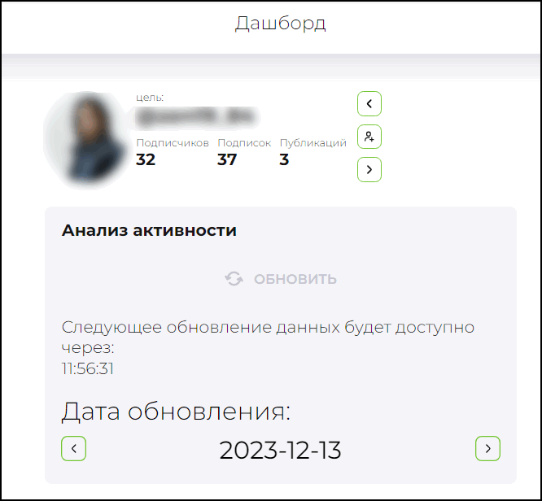
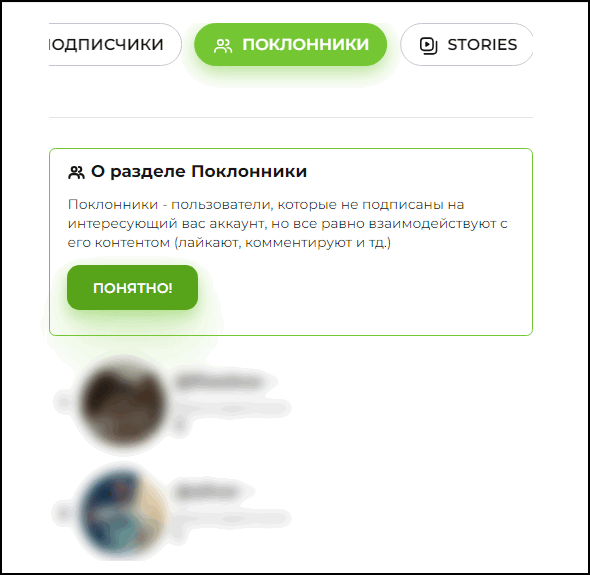
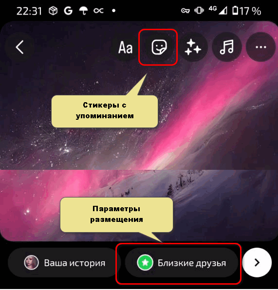
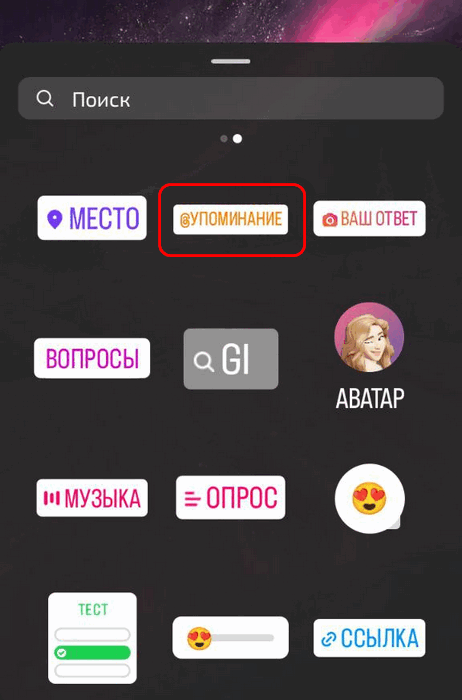

Как познакомиться с девушкой в Инстаграм и что ей написать

У молодых людей нередко возникает вопрос: как познакомиться с девушкой в Инстаграме*. Потому что дамы сердце порой отклоняют запросы, не реагируют на личные сообщения или отвечают односложно.
Написать личное сообщение: ограничения приватности
Сообщение, которое отправляют пользователю, не добавленному во взаимные подписки, попадает в список «Запросы». А если у девушки закрытый тип профиля, то чтобы отправить письмо нужно отправить заявку на подписку.
 В социальной сети пользователь может вовсе установить приватность и ограничить получение сообщений от незнакомцев.
Поэтому, если ответа на личное сообщение нет, то стоит попробовать другие варианты связи:
В социальной сети пользователь может вовсе установить приватность и ограничить получение сообщений от незнакомцев.
Поэтому, если ответа на личное сообщение нет, то стоит попробовать другие варианты связи:
- оставить комментарий под публикацией. Например, откомментировать её фотографию позитивным сообщением;
- сделать Историю с упоминанием. Фотографии цветов или картинка с романтической цитатой;
- записать Рилз, который будет посвящен любви и отметить в описании страницу девушки.
Написав девушке, чтобы познакомиться в Инстаграме* таким способом, молодой человек привлечет к себе максимум внимания.
Комментарии чтобы привлечь внимание
Если у возлюбленной открыта страница и доступ к комментариям – можно оставить отклик на её записи. Это могут быть комплименты со смайликами, не стоит писать предложение познакомиться. Парни нередко оставляют отклики в формате: «Загляни в личные сообщения» или «Давай пообщаемся в личке». Девушка может ответить на такой текст смайликом или же оставить ответ. В любом случае, прокомментировав её пост, молодой человек не останется незамеченным. При просмотре публикаций можно больше узнать о девушке, её интересах и предпочтениях, и использовать это в личной переписке, а если профиль закрыт, то есть другие варианты посмотреть её Reels или публикации на страничке.
Инсташпион: узнай её лучше
Instashpion.ru – это сервис, где можно анонимно посмотреть информацию о другом человеке.

К разделам для просмотра относятся:- комментарии и лайки. Полученные и отправленные;
- подписчики и подписки. На кого подписалась и кто оформил подписку;
- гости и посетители страницы. Кто чаще всего посещает страницу возлюбленной и с кем она, вероятно, общается больше остальных;
- список Reels и публикаций;
- Истории. Анонимный просмотр Stories, которые были опубликованы недавно.

Сервис анализирует данные цели, показывая ежедневную активность. Чтобы воспользоваться Инсташпионом нужно создать внутренний аккаунт и указать никнейм цели за которой будет наблюдение. Сервис не собирает ваши конфиденциальные данные, а отображает только общедоступные, основываясь на алгоритмах социальной сети. Также, чтобы работать с ним, не нужно подключать собственный профиль из Инстаграма*, поэтому просмотр записей, Сторис и комментариев абсолютно анонимен.Когда понравилась девушка и нашел её в Инстаграм*, Инсташпион подскажет с кем она часто общается и состоит ли она в отношениях.
История с упоминанием
Такой способ простой, если нужно привлечь внимание и нет стеснения сообщить о своей влюбленности. Хотя редактор Сторис предлагает вариант со скрытым упоминанием: девушка получит уведомление, что её отметили в Истории. Как сделать скрытую Историю:
- Подписаться на нужного человека в Инстаграме*.
- Перейти в раздел: «Настройки» - Близкие друзья.
- Добавить в этот перечень только ранее добавленного пользователя.

- Сделать Историю с признанием – через стикеры добавить «Упоминание» или с помощью «@» текстом.
- В настройках размещения выбрать: «Добавить только для близких друзей».

- Опубликовать.
Теперь Сторис будет доступна только для возлюбленной, а друзья даже не увидят, что добавлена новая запись.
Сделай крутой Reels в Инстаграме*
Рилс – это публичное заявление, потому что такую запись могут увидеть, как подписчики, так и посетители страницы. Особенно, если аккаунт открытый и на публикацию не выставлены параметры приватности.
Узнай подробнее о том, как сделать интересное видео и не ошибиться с форматом: краткая инструкция по работе с Reels
Для записи видео стоит воспользоваться приложениями или отдать предпочтение стандартному слайд-шоу под музыку:
- CapCut. Целый каталог шаблонов, где есть проработка изображений, работа со слоями;
- inShot. Создание необычного слайд-шоу с переходами, оригинальной музыкой.
В Инстаграме*, в редакторе Рилс, также есть создание слайд-шоу. Идеей, чтобы привлечь внимание девушки, может стать видео с её общедоступными фотографиями и отметкой.
Как не остаться в заявках на закрытом профиле
Обидно, когда прилагаешь максимум усилий, а девушка все равно не отвечает на сообщения. Особенно на закрытом профиле, где чтобы написать в личку, нужно дождаться подтверждения заявки в друзья. В этом случае нужно прибегнуть к другим способам:
- поискать её профиль в других социальных сетях;
- попробовать отправить заявку в друзья с другого аккаунта.
Например, юных особ отпугивает больше число подписок на других девушек у парня. Стоит обратить внимание на контент на своей странице и скрыть в Архив тот, который непонятен посторонним или может напугать посетителя.